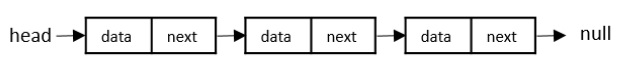
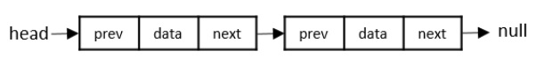
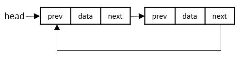
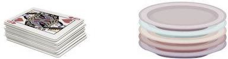
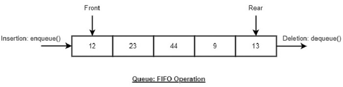
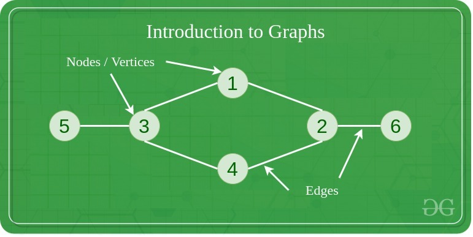
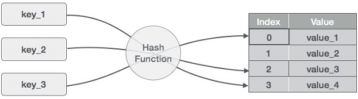

Linked List
linked list is a collection of “nodes” connected together via links. These nodes consist of the data to be stored and a pointer to the address of the next node within the linked list. In the case of arrays,
the size is limited to the definition, but in linked lists, there is no defined size.
There are three types of linked lists
- Singly Linked List − The nodes only point to the address of the next node in the list.
Singly linked lists contain two “buckets” in one node; one bucket holds the data and the
other bucket holds the address of the next node of the list.
Traversals can be done in one direction only as there is only a
single link between two nodes of the same list.

- Doubly Linked List − The nodes point to the addresses of both previous and next nodes.
Doubly Linked Lists contain three “buckets” in one node; one bucket holds the data and the other
buckets hold the addresses of the previous and next nodes in the list. The list is traversed
twice as the nodes in the list are connected to each other from both sides.

- Circular Linked List − The last node in the list will point to the first node in the list.
It can either be singly linked or doubly linked.
Circular linked lists can exist in both singly linked list and doubly linked list.Since the last node and the first node of the circular linked list are connected,
the traversal in this linked list will go on forever until it is broken.

Stack
A stack is an Abstract Data Type (ADT), that is popularly used in most programming
languages. It is named stack because it has the similar operations as the real-world
stacks, for example – a pack of cards or a pile of plates, etc.

A Stack ADT allows all data operations at one end only. At any given time, we can only access the top element of a stack.
The following diagram depicts a stack and its operations −

A stack can be implemented by means of Array, Structure, Pointer, and Linked List.
Stack can either be a fixed size one or it may have a sense of dynamic resizing.
Here, we are going to implement stack using arrays, which makes it a fixed size
stack implementation.
Basic operation on Stacks
Stack operations usually are performed for initialization, usage and, de-initialization of the stack
The most fundamental operations in the stack ADT include: push(), pop(), peek(), isFull(), isEmpty().
These are all built-in operations to carry out data manipulation and to check the status of the stack.
Queues
Queue, like Stack, is also an abstract data structure. The thing that makes queue different from stack
is that a queue is open at both its ends. Hence, it follows FIFO (First-In-First-Out)
structure, i.e. the data item inserted first will also be accessed first. The data is
inserted into the queue through one end and deleted from it using the other end.
A real-world example of queue can be a single-lane one-way road, where the vehicle enters first, exits first.
More real-world examples can be seen as queues at the ticket windows and bus-stops.
Representation of queue

Basic operartion on Queues
Queue operations also include initialization of a queue, usage and permanently deleting the data from the memory.
The most fundamental operations in the queue ADT include: enqueue(), dequeue(), peek(), isFull(), isEmpty().
These are all built-in operations to carry out data manipulation and to check the status of the queue.
Trees
Tree Data Structure is a hierarchical data structure in which a collection of elements known as nodes
are connected to each other via edges such that there exists exactly one path between any two nodes
The tree data structure stems from a single node called a root node and has subtrees connected to the root.

Graphs
A Graph is a non-linear data structure consisting of vertices and edges. The vertices are sometimes also referred to as nodes and the edges are lines or arcs that connect any two nodes in the graph. More formally a
Graph is composed of a set of vertices( V ) and a set of edges( E ). The graph is denoted by G(E, V).

HashTables
Hash Table is a data structure which stores data in an associative manner. In a hash table, data is stored in an array format, where each data value has its own unique
index value. Access of data becomes very fast if we know the index of the desired data.
Hashing is a technique to convert a range of key values into a range of indexes of an array. We're going to use modulo operator to get a range of key values. Consider an example of
hash table of size 20, and the following items are to be stored. Item are in the (key,value) format.

 08069878321
08069878321
 hello@thetapacademy.com
hello@thetapacademy.com